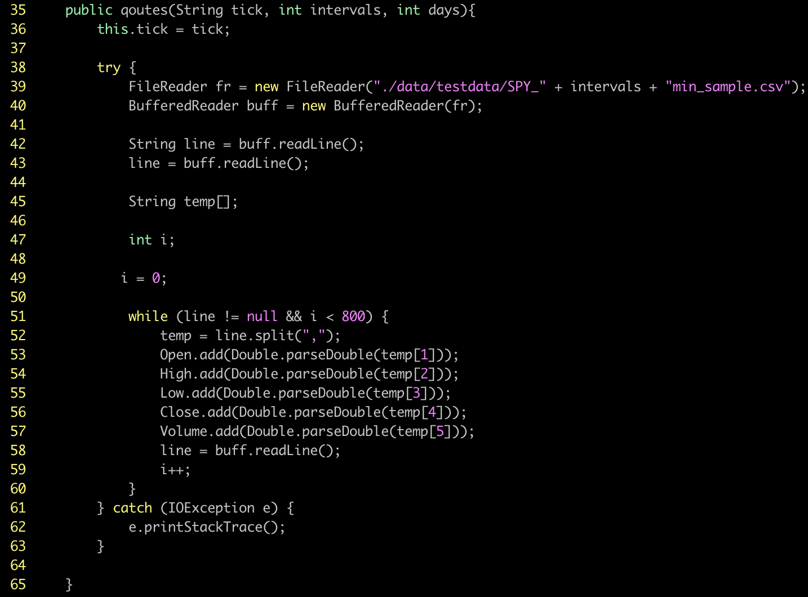
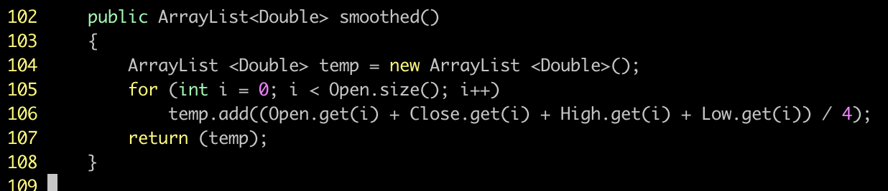
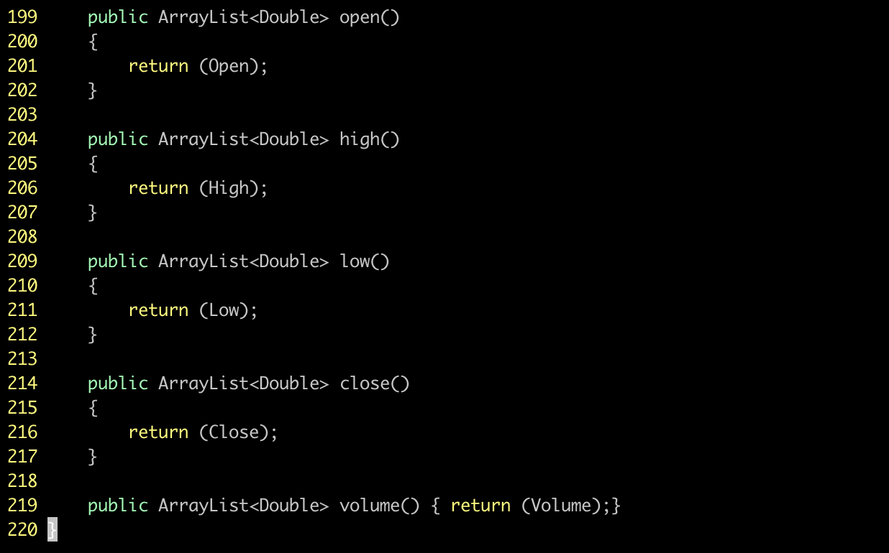
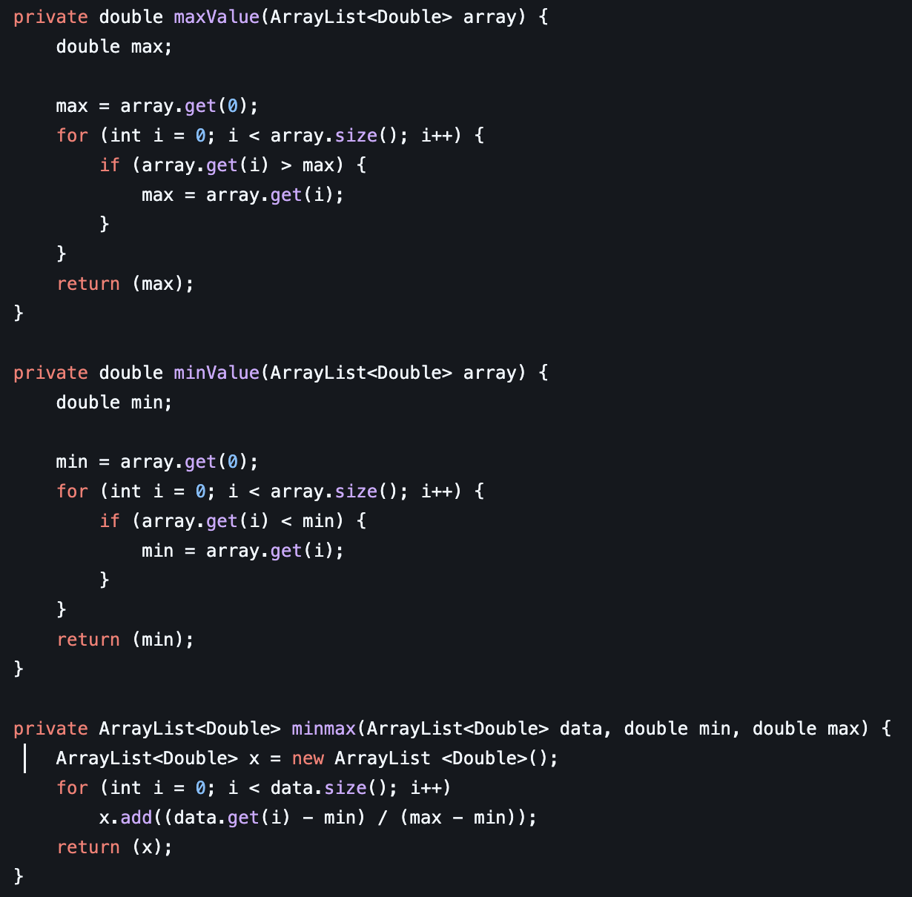
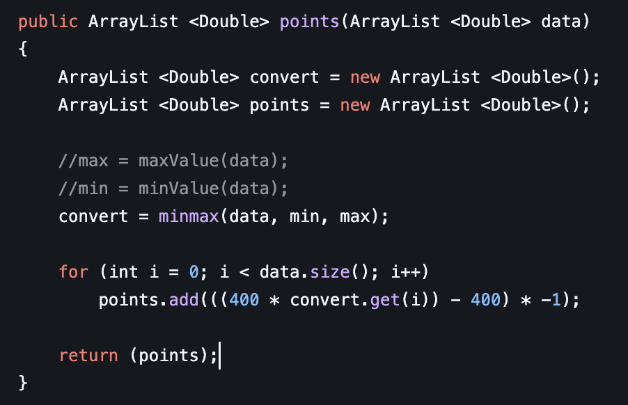

Java Stock Project Explained Part One
How The Chart Is Rendered!
1.) Get Raw CSV Data
This can be found online. You can either look to download data, have an API serve you the data, or have a local CSV file with proper data formatting.
Example of raw CSV data

2.) Read Raw CSV data
CSV stands for Comma Separated Value. In this example, here we are using FileReader and BufferReader from java.util. We are also using IOExecption from java.io library. We first start by passing the file path to the FileReader Object. Then we pass the fr object to the BufferedReader Object to begin extracting data from the local CSV file in this example.
After we declare a variable String equal to the return of the buff objects readLine() function. This allows us to read each line of data that is read in through the CSV file that is held locally. Next we create a temporary array of strings called temp[]. We use this to temporarily store the string of data we are targeting to extract.
After this, we use a while loop with the condition of either ending if there is no data left to read or if we have read in 800 total data points. This can be adjusted, it doesn't have to be however for charting purposes on this software, we are looking for the most recent 800 data points of at least as close to that as we are able to get with the raw CSV data provided to us.
Next we use the .split() function from java to create an array of strings that is pulled where each instance of a "," is. Meaning the string String s = "50,60,70,60,1092" turns into String[] s = {"50", "60", "70", "60", "1092"}. Once we use this built-in java function, we then set our globally declared variables to start adding data with the .add function from a java Arraylist. Once we do that, we use the buff.readLine() function to read the next line from the CSV file. Each line is defined by a '\n' or a new line character.
Code Example In Java
2.) - 2 Smoothing Data Function
This function adds together the open, high, low, then close. After that, it divides the total by 4, giving a smoothing effect of each line of data needed to analyze further in the program.
Code Example In Java
2.) - 3 Returning Data From Class Or Object
This allows us to easily call arrays from our object that holds the stock data
Code Example In Java
3.) Initialize Drawing Data
Here we start with running our minValue function we shall cover next. We also run our maxValue function, which we will also cover next. We then get our ypoints from using the points function. This function we will go over soon
After, we get our xvalue as well as yvalue. This is important for knowing what numbers we need to put on each axis of our chart we are drawing. The xvalue is determined by the array length of the stock data divided by the width of the screen. We need xvalue so that we can properly space out each pixel we are going to draw. We need to then get the yvalue as we also need to know what number we should increment on the yaxis. This is achieved by using the max value subtracted by the min value then divided by 20. For instance, say we had a stock with a data set that has the highest value of $100 in the array rather than the lowest value of $20 in the array. Our value would then turn out to be (100 - 20) / 20 -> 80 / 20 - > $4. This yvalue tells us we should increment by $4 on the y-axis as we increment a total of 20 different times on the chart. This works super well as it allows for any array of values. This is important as stock values can range drastically between equites and what not.
Code Example in Java

3.) - 2 Use a Min-Max Convert
This is a very important step before charting out the data of a stock
The top function loops through an array then gets the max value, the bottom function also loops through the array and then returns the min value. After this is done, we then pass the results to the minmax function
What the minmax function does is it allows us to create a brand-new array of values between 0 - 1. This is essentially turning an array of (0, 1, 2, 3, 4) into (0, 0.25, 0.5, 0.75, 1). This is great as it keeps the ratio of variance between the numbers together while giving us a value that is between 0 and 1. This is important as later in the program we use these points to figure out where on the y-axis we should be plotting each of our data points to construct an accurate model of the stock data.
Code Example in Java
3.) - 3 Convert the Y-Points
Here we use those minmax points to multiply them by our total screen area height. In this case it is 400 pixels. We then subtract 400 from the result to get the correct point, then multiply it by -1 to make it even. This allows for any data array to be plotted accurately within a 400 pixel height screen
Code Example in Java
3.) - 4 Draw Converted Y-Points
Last but not least, the actual drawing!
Here we set our graphics drawing to the color red using java libs. We then prepare the for loop to go through 800 points backwards. Notice we are subtracting i from the xvalue we got earlier. Allowing the loop to plot evenly spaced points on the x-axis of the chart. We use an x variable that is the length of the converted points, then start subtracting back from it.
This first if statement checks if the point of data is greater than or less than the next point. It does this to determine the color of the line. If it starts out higher, it indicates the price has risen, which sets the color to green. Otherwise, if it is lower, it indicates the price has fallen, which sets the color to red.
The Line2D function takes in an (x , y)1 (x, y)2 points to draw a line between. We are plotting each pixel on the screen from the xvalue we initialized to the convenient points for the yvalue to ensure an accurate representation of the data.